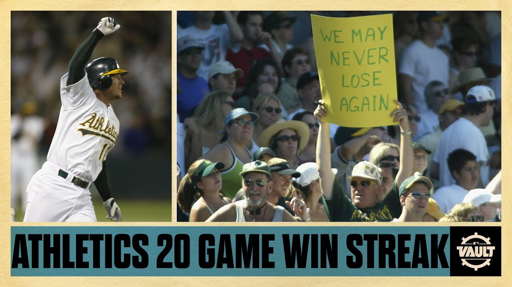

library("corrplot") #visualize correlations simultaneously
library("gt") #great tables
library("tidyverse") #tools for data wrangling and visualization
oakland_green <- "#003831"
oakland_yellow <- "#EFB21E"
# user-defined function
cor2text <- function(x,y, num_digits = 4){
# This function will compute a correlation, round the result, and describe the results
# INPUTS:
## x: numerical vector
## y: numerical vector
## num_digits: number of digits for rounding (default: 4)
# OUTPUT: string
r = cor(x,y, use = "pairwise.complete.obs")
cor_des <- case_when(
r >= 0.7 ~ "strongly and positively correlated",
r >= 0.4 & r < 0.7 ~ "slightly and positively correlated",
r <= -0.4 & r > -0.7 ~ "slightly and negatively correlated",
r <= -0.7 ~ "strongly and negatively correlated",
.default = "virtually uncorrelated"
)
#return
paste0("r = ", round(r, num_digits),
", ", cor_des)
}bb_df <- readr::read_csv("https://raw.githubusercontent.com/dsollberger/sml201slides/main/data/baseball_data_90s.csv")
offense_cats <- c("R", "H", "X2B", "X3B", "HR", "BB", "SO", "SB")
defense_cats <- c("RA", "ER", "HA", "HRA", "BBA", "SOA", "E", "FP")SML 201
Start
Goal: Expand to larger regression models
Objective: Include multiple linear terms and an interaction term

Story
- Oakland Athletics fielded a competitive team despite having a payroll size around 1/3 of some other franchises
- Traditional scouting vs modern statistics
- Idea: Can we identify qualities (variables) in baseball players that lead to more wins?

- image source: Wikimedia Commons
{kind=link}
Data
Today’s data set comes from the Lahman package, which contains a lot of historical data about Major League Baseball.
R: runsH: hitsX2B: doublesX3B: triplesHR: home runsBB: walksSO: strikeouts (by hitters)SB: stolen bases
RA: runs allowedER: earned runsHA: hits allowedHRA: home runs allowedBBA: walks allowedSOA: strikeouts (by pitchers)E: errorsFP: fielding percentage
Searching for Wins
Correlation

bb_df |>
ggplot(aes(x = R, y = W)) +
geom_point(color = oakland_green) +
labs(title = "Wins vs Runs Scored",
subtitle = paste0("r = ", round(cor_value, 4),
", slightly and positively correlated"),
caption = "seasons 1990 to 1999",
x = "runs scored",
y = "wins") +
theme_minimal()
cor_value <- cor(bb_df$RA, bb_df$W)
bb_df |>
ggplot(aes(x = RA, y = W)) +
geom_point(color = oakland_green) +
labs(title = "Wins vs Runs Allowed",
subtitle = paste0("r = ", round(cor_value, 4),
", virtually uncorrelated"),
caption = "seasons 1990 to 1999",
x = "runs allowed",
y = "wins") +
theme_minimal()Correlation Matrices
bb_df |>
select(any_of(offense_cats)) |>
cor() |>
corrplot.mixed(order = "FPC",
upper = "ellipse")bb_df |>
select(any_of(defense_cats)) |>
cor() |>
corrplot.mixed(order = "FPC",
upper = "ellipse")
New Directions
So far, a sabermetrician might observe and ask
- Wins are correlated with runs scored
- What correlates well with runs scored?
Linear Regression
Call:
lm(formula = HR ~ X3B, data = bb_df)
Residuals:
Min 1Q Median 3Q Max
-75.904 -26.951 -4.516 23.685 106.423
Coefficients:
Estimate Std. Error t value Pr(>|t|)
(Intercept) 176.3250 8.3418 21.138 < 2e-16 ***
X3B -0.8879 0.2582 -3.439 0.000674 ***
---
Signif. codes: 0 '***' 0.001 '**' 0.01 '*' 0.05 '.' 0.1 ' ' 1
Residual standard error: 38.16 on 276 degrees of freedom
Multiple R-squared: 0.04109, Adjusted R-squared: 0.03762
F-statistic: 11.83 on 1 and 276 DF, p-value: 0.0006737- negative correlation \(\Longleftrightarrow\) decreasing trend
- \(R^{2} \approx 0.04\): bad model
summary(lm(HR ~ X3B, data = bb_df))
bb_df |>
ggplot(aes(x = X3B, y = HR)) +
geom_point(color = oakland_yellow) +
geom_smooth(formula = "y ~ x",
method = "lm",
color = "red") +
labs(title = "Home Runs vs Triples",
subtitle = cor2text(bb_df$RA, bb_df$W),
caption = "seasons 1990 to 1999",
x = "triples",
y = "home runs") +
theme_minimal()
Call:
lm(formula = R ~ H, data = bb_df)
Residuals:
Min 1Q Median 3Q Max
-140.864 -40.845 -1.513 44.465 153.202
Coefficients:
Estimate Std. Error t value Pr(>|t|)
(Intercept) -108.79033 33.84845 -3.214 0.00146 **
H 0.59342 0.02392 24.811 < 2e-16 ***
---
Signif. codes: 0 '***' 0.001 '**' 0.01 '*' 0.05 '.' 0.1 ' ' 1
Residual standard error: 58.25 on 276 degrees of freedom
Multiple R-squared: 0.6904, Adjusted R-squared: 0.6893
F-statistic: 615.6 on 1 and 276 DF, p-value: < 2.2e-16- positive correlation \(\Longleftrightarrow\) increasing trend
- \(R^{2} \approx 0.6893\): good model
summary(lm(R ~ H, data = bb_df))
bb_df |>
ggplot(aes(x = H, y = R)) +
geom_point(color = oakland_green) +
geom_smooth(formula = "y ~ x",
method = "lm",
color = "blue") +
labs(title = "Runs Scored vs Hits",
subtitle = cor2text(bb_df$R, bb_df$H),
caption = "seasons 1990 to 1999",
x = "hits",
y = "runs scored") +
theme_minimal()Model Equation
\[\text{Runs} = \beta_{0} + \beta_{1}(\text{Hits})\]
- \(\beta_{0}\): intercept
- \(\beta_{1}\): change in Runs with respect to Hits
lm(R ~ H, data = bb_df)
Call:
lm(formula = R ~ H, data = bb_df)
Coefficients:
(Intercept) H
-108.7903 0.5934 - \(\beta_{0} \approx -108.7903\)
- \(\beta_{1} \approx 0.5934\)
\[\text{Runs} = -108.7903 + 0.5934(\text{Hits})\]
In a hypothetical scenario where a team has zero hits,
\[\text{Runs} = -108.7903 + 0.5934(0)\] the model estimates that the baseball team will win about negative 109 games in a season.
- see note about “Removing the intercept” below
We continue to intercept the rate of change (or slope)
\[\beta_{1} \approx 0.5934\]
with language like
For every additional hit, the number of runs increases by about 0.5934.
We can get a sense of how useful this model can be with the coefficient of determination.
mod1 <- lm(R ~ H, data = bb_df) #baseline model
summary(mod1)$adj.r.squared[1] 0.6893222According to the coefficient of determination, this model (with “Hits” as an explanatory variable) explains about 69 percent of the variance in runs scored.
Removing the Intercept
Sometimes an analyst might want to remove the intercept term (here: zero hits should imply zero runs?)
\[\text{Runs} = \beta_{1}(\text{Hits})\]
mod0 <- lm(R ~ H - 1, data = bb_df) #removed intercept
mod0
Call:
lm(formula = R ~ H - 1, data = bb_df)
Coefficients:
H
0.517 summary(mod0)$adj.r.squared #removed intercept[1] 0.993489summary(mod1)$adj.r.squared #baseline model[1] 0.6893222While removing the intercept seems great in this simple example, in practice removing the intercept does not tend to generalize to larger models or inclusion of additional data.
Multiple Linear Regression
We can include more explanatory variables in our models
\[\text{Runs} = \beta_{0} + \beta_{1}(\text{Hits}) + \beta_{2}(\text{Walks})\]
- \(\beta_{0}\): intercept
- \(\beta_{1}\): change in Runs with respect to Hits
- \(\beta_{2}\): change in Runs with respect to Walks
lm(R ~ H + BB, data = bb_df)
Call:
lm(formula = R ~ H + BB, data = bb_df)
Coefficients:
(Intercept) H BB
-124.4358 0.4382 0.4395 In a hypothetical scenario where a team has zero hits and zero walks,
\[\text{Runs} = -124.4358 + 0.4382(0) + 0.4395(0)\] the model estimates that the baseball team will win about negative 124 games in a season.
In regression, we say that we control for other variables by treating other variables as constants.
\[\text{Runs} = -124.4358 + 0.4382(\text{Hits}) + 0.4395(\text{Walks})\]
Holding walks constant, for every additional hit, the number of runs increases by about 0.4382.
Holding hits constant, for every additional walk, the number of runs increases by about 0.4395.
Continuing our usage of the coefficient of determination
mod2 <- lm(R ~ H + BB, data = bb_df)
summary(mod1)$adj.r.squared #baseline model[1] 0.6893222summary(mod2)$adj.r.squared #slightly modified model[1] 0.7735558According to the coefficient of determination, this model (with 2 explanatory variables) explains about 77 percent of the variance in runs scored.
Different Models, Different Coefficients
Coefficients are different in different models
| Early Baseball Stats Models | ||
|---|---|---|
| Comparing the coefficients | ||
| coefs | mod1 | mod2 |
| beta_0 | -108.7903 | -124.4358 |
| beta_1 | 0.5934 | 0.4382 |
| beta_2 | - | 0.4395 |
| SML 201 | ||
mod_stats_df <- data.frame(
coefs = c("beta_0", "beta_1", "beta_2"),
mod1 = c(-108.7903, 0.5934, "-"),
mod2 = c(-124.4358, 0.4382, 0.4395)
)
mod_stats_df |>
gt() |>
cols_align(align = "center") |>
tab_footnote(footnote = "SML 201") |>
tab_header(
title = "Early Baseball Stats Models",
subtitle = "Comparing the coefficients"
) |>
tab_style(
style = cell_text(weight = "bold"),
locations = cells_column_labels()
) |>
tab_style(
style = list(
cell_fill(color = oakland_green),
cell_text(color = oakland_yellow)
),
locations = cells_body(columns = mod1)
) |>
tab_style(
style = list(
cell_fill(color = oakland_yellow),
cell_text(color = oakland_green)
),
locations = cells_body(columns = mod2)
)In practice, we tend to explore several models through trial-and-error. After choosing a model, we then scrutinize the interpretation of the \(\beta\) coefficients.
Interlude: Sabermetrics
- Henry Chadwick
- writer, historian
- 1824 to 1908
- “Father of Baseball”
- invented the box score (how games are summarized in newspapers)
- refined definitions of concepts like errors and batting average

We tend to call the statistical analysis of baseball sabermetrics. Bill James coined the term in 1980, and described it as “the search for objective knowledge about baseball” (source)
- SABR: Society for American Baseball Research
Over time, baseball writers wanted to talk about batters (offense) in more ways. From the previous measured variables, here are some of the derived variables that became common in baseball discussions.
\[BA = \frac{H}{AB}\] \[OBP = \frac{H + BB + HBP}{AB}\] \[SLG = \frac{H + 2B + 2*3B + 3*HR}{AB}\] \[OPS = OBP + SLG\]
Model Selection
Augmentation
We can attach new columns and calculations using mutate.
bb_df <- bb_df |>
mutate(BA = H/AB, #batting average
OBP = (H + BB + HBP)/AB, #on-base percentage
SLG = (H + X2B + 2*X3B + 3*HR)/AB, #slugging percentage
OPS = OBP + SLG) #on-base plus slugging- Stats like runs, hits, walks, and strikeouts are called count statistics. Baseball players tend to accumulate count statistics with more playing time.
- Stats like
BA,OBP, andSLGare called rate statistics. These baseball statistics are adjusted over playing time. - These derived statistics may be better to evaluate individual baseball players (rather than whole teams).
- Aside: yes, it may be silly to add together
OBPandSLG(i.e. two rate statistics), but baseball writers really like this calculation.
Using the Derived Statistics
We build a model for different allocations of explanatory variables.
fit_BA <- lm(R ~ BA, data = bb_df)
fit_OBP <- lm(R ~ OBP, data = bb_df)
fit_SLG <- lm(R ~ SLG, data = bb_df)
fit_OPS <- lm(R ~ OBP + SLG, data = bb_df)Measuring the Models
We use the coefficients of determination to help us rank the models.
summary(fit_BA)$adj.r.squared[1] 0.3445441summary(fit_OBP)$adj.r.squared[1] 0.4279833summary(fit_SLG)$adj.r.squared[1] 0.433078summary(fit_OPS)$adj.r.squared[1] 0.4902423Picking the Best Model
| Derived Baseball Stats Models | |
|---|---|
| Comparing the coefficients of determination | |
| models | r2_vals |
| fit_BA | 0.3445 |
| fit_OBP | 0.4280 |
| fit_SLG | 0.4331 |
| fit_OPS | 0.4902 |
| SML 201 | |
mod_stats_df2 <- data.frame(
models = paste0("fit_", c("BA", "OBP", "SLG", "OPS")),
r2_vals = round(c(summary(fit_BA)$adj.r.squared,
summary(fit_OBP)$adj.r.squared,
summary(fit_SLG)$adj.r.squared,
summary(fit_OPS)$adj.r.squared), 4)
)
mod_stats_df2 |>
gt() |>
cols_align(align = "center") |>
tab_footnote(footnote = "SML 201") |>
tab_header(
title = "Derived Baseball Stats Models",
subtitle = "Comparing the coefficients of determination"
) |>
tab_style(
style = cell_text(weight = "bold"),
locations = cells_column_labels()
) |>
tab_style(
style = list(
cell_fill(color = oakland_yellow),
cell_text(color = oakland_green,
weight = "bold")
),
locations = cells_body(columns = c(models, r2_vals),
rows = r2_vals == max(r2_vals))
# finds maximum value programmatically
)Interaction Terms
Before Interaction
First, let us try another multiple linear regression model
\[\text{Wins} = \beta_{0} + \beta_{1}(\text{Runs Scored}) + \beta_{2}(\text{Runs Allowed})\]
response variable: Wins
explanatory variables:
- Runs Scored (offense)
- Runs Allowed (defense)
lm(W ~ R + RA, data = bb_df)
Call:
lm(formula = W ~ R + RA, data = bb_df)
Coefficients:
(Intercept) R RA
42.50059 0.12530 -0.07692 In a hypothetical scenario where a team has zero runs and zero runs allowed,
\[\text{Wins} = 42.5006 + 0.1253(0) - 0.0769(0)\]
the model estimates that the baseball team will win about 43 games in a season.
In regression, we say that we control for other variables by treating other variables as constants.
\[\text{Wins} = 42.5006 + 0.1253(\text{Runs Scored}) - 0.0769(\text{Runs Allowed})\]
Holding runs allowed constant, for every additional run scored, the number of wins increases by about 0.1253.
Holding runs scored constant, for every additional run allowed, the number of wins decreases by about 0.0769.
With our usage of the coefficient of determination
without_interaction <- lm(W ~ R + RA, data = bb_df)
summary(without_interaction)$adj.r.squared[1] 0.700125According to the coefficient of determination, this model (with 2 explanatory variables) explains about 70 percent of the variance in wins.
With an Interaction Term
Now let us explore an interaction term
\[\begin{array}{rcl} \text{Wins} & = & \beta_{0} \\ & & + \beta_{1}(\text{Runs Scored}) \\ & & + \beta_{2}(\text{Runs Allowed}) \\ & & + \beta_{3}(\text{Runs Scored})(\text{Runs Allowed}) \\ \end{array}\]
response variable: Wins
explanatory variables:
- Runs Scored
- Runs Allowed
- interaction bteween Runs Scored and Runs Allowed
lm(W ~ R + RA + R:RA, data = bb_df)
Call:
lm(formula = W ~ R + RA + R:RA, data = bb_df)
Coefficients:
(Intercept) R RA R:RA
-8.896e+01 3.082e-01 1.090e-01 -2.555e-04 In a hypothetical scenario where a team has zero runs and zero runs allowed,
\[\text{Wins} = -88.96 + 0.3082(0) + 0.1090(0) - 0.0002(0)(0)\]
the model estimates that the baseball team will win about -89 games in a season.
To get a sense of how many runs a MLB team allows in a season, we can use the summary command.
summary(bb_df$RA) Min. 1st Qu. Median Mean 3rd Qu. Max.
448.0 655.2 721.0 726.5 794.0 1103.0 Strong Defense
Suppose that a MLB team has good defensive skills and allows about 650 runs in a season (i.e. around the 20th percentile).
\[\begin{array}{rcl} \text{Wins} & = & -88.96 + 0.3082(\text{Runs Scored}) + 0.1090(\text{Runs Allowed}) - 0.0002(\text{Runs Scored})(\text{Runs Allowed}) \\ ~ & = & -88.96 + 0.3082(\text{Runs Scored}) + 0.1090(650) - 0.0002(\text{Runs Scored})(650) \\ ~ & = & -18.11 + 0.1782(\text{Runs Scored})\\ \end{array}\]
Holding runs allowed constant at 650, for every additional run scored, the number of wins increases by about 0.1782.
Weak Defense
Suppose that a MLB team has weak defensive skills and allows about 800 runs in a season (i.e. around the 80th percentile).
\[\begin{array}{rcl} \text{Wins} & = & -88.96 + 0.3082(\text{Runs Scored}) + 0.1090(\text{Runs Allowed}) - 0.0002(\text{Runs Scored})(\text{Runs Allowed}) \\ ~ & = & -88.96 + 0.3082(\text{Runs Scored}) + 0.1090(800) - 0.0002(\text{Runs Scored})(800) \\ ~ & = & -1.76 + 0.1482(\text{Runs Scored})\\ \end{array}\]
Holding runs allowed constant at 800, for every additional run scored, the number of wins increases by about 0.1482.
With our usage of the coefficient of determination
with_interaction <- lm(W ~ R + RA + R:RA, data = bb_df)
summary(without_interaction)$adj.r.squared[1] 0.700125summary(with_interaction)$adj.r.squared[1] 0.764043According to the coefficient of determination, this model (with the interaction term) explains about 76 percent of the variance in wins.
Epilogue: Picking Players

“Billy, this is Chad Bradford. He’s a relief pitcher. He is one of the most undervalued players in baseball. His defect is that he throws funny. Nobody in the big leagues cares about him, because he looks funny. This guy could be not just the best pitcher in our bullpen, but one of the most effective relief pitchers in all of baseball. This guy should cost $3 million a year. We can get him for $237,000.” — Peter Brand
- Billy Beane: You don’t know how to play 1st base. Scott…
- Scott Hatteberg: That’s right.
- Billy Beane: It’s not that hard, Scott. Tell him Wash.
- Ron Washington: It’s incredibly hard.
- Billy Beane: Hey, anything worth doing is. And we’re gonna teach you.

Era Adjustment
Milestone Home Run Totals
Roger Maris hit 61 home runs in 1961
Aaron Judge hit 62 home runs in 2022
- American League records

Lahman::Batting |>
filter(yearID %in% c("1961", "2022")) |>
filter(AB >= 100) |>
group_by(yearID) |>
summarize(xbar = mean(HR, na.rm = TRUE),
s = sd(HR, na.rm = TRUE))# A tibble: 2 × 3
yearID xbar s
<int> <dbl> <dbl>
1 1961 10.8 10.8
2 2022 10.6 8.91\[z_{M} = \frac{61 - \bar{x}_{2022}}{s_{2022}} = \frac{61 - 10.7615}{10.7928} \approx 4.6548\] Roger Maris’ home run record was about 4.6548 standard deviations above the mean in 1961.
\[z_{J} = \frac{62 - \bar{x}_{2022}}{s_{2022}} = \frac{62 - 10.5729}{8.9065} \approx 5.7741\]
Aaron Judge’s home run record was about 5.7741 standard deviations above the mean in 2022.
\[4.6548 = \frac{x_{M} - \bar{x}_{2022}}{s_{2022}} = \frac{x_{M} - 10.5729}{8.9065} \Rightarrow x_{M} \approx 52.0388\]
\[5.7741 = \frac{x_{J} - \bar{x}_{1961}}{s_{1961}} = \frac{x_{J} - 10.7615}{10.7928} \Rightarrow x_{J} \approx 73.0802\]

- Roger Maris would have hit 52 home runs is 2022
- Aaron Judge would have hit 73 home runs in 1961

Precept 5
- NBA basketball data
- 2013 to 2023
- practice data science skills from semester so far
- start building linear regression models
Quo Vadimus?
- Continue to complete BLTs and precept assignments
- Project 1 Due: Oct 2
- Exam 1: Oct 10
- Refer to weekly announcement for more info
- Derek is reminiscing about the games back in Oakland.
Footnotes
(optional) Additional Resources
If anyone is interested into a deeper study of the data wrangling in Moneyball, you can take the online course Moneyball and Beyond offered by the University of Michigan as part of the Coursera specialization in Sports Performance Analytics
Session Info
sessionInfo()R version 4.4.1 (2024-06-14 ucrt)
Platform: x86_64-w64-mingw32/x64
Running under: Windows 10 x64 (build 19045)
Matrix products: default
locale:
[1] LC_COLLATE=English_United States.utf8
[2] LC_CTYPE=English_United States.utf8
[3] LC_MONETARY=English_United States.utf8
[4] LC_NUMERIC=C
[5] LC_TIME=English_United States.utf8
time zone: America/New_York
tzcode source: internal
attached base packages:
[1] stats graphics grDevices utils datasets methods base
other attached packages:
[1] lubridate_1.9.3 forcats_1.0.0 stringr_1.5.1 dplyr_1.1.4
[5] purrr_1.0.2 readr_2.1.5 tidyr_1.3.1 tibble_3.2.1
[9] ggplot2_3.5.1 tidyverse_2.0.0 gt_0.11.0 corrplot_0.94
loaded via a namespace (and not attached):
[1] sass_0.4.9 utf8_1.2.4 generics_0.1.3 xml2_1.3.6
[5] lattice_0.22-6 stringi_1.8.4 hms_1.1.3 digest_0.6.35
[9] magrittr_2.0.3 evaluate_0.24.0 grid_4.4.1 timechange_0.3.0
[13] fastmap_1.2.0 Matrix_1.7-0 jsonlite_1.8.8 mgcv_1.9-1
[17] fansi_1.0.6 scales_1.3.0 cli_3.6.2 rlang_1.1.4
[21] crayon_1.5.3 Lahman_12.0-0 splines_4.4.1 bit64_4.0.5
[25] munsell_0.5.1 withr_3.0.1 yaml_2.3.8 tools_4.4.1
[29] parallel_4.4.1 tzdb_0.4.0 colorspace_2.1-1 curl_5.2.1
[33] vctrs_0.6.5 R6_2.5.1 lifecycle_1.0.4 htmlwidgets_1.6.4
[37] bit_4.0.5 vroom_1.6.5 pkgconfig_2.0.3 pillar_1.9.0
[41] gtable_0.3.5 glue_1.7.0 xfun_0.44 tidyselect_1.2.1
[45] rstudioapi_0.16.0 knitr_1.48 farver_2.1.2 nlme_3.1-164
[49] htmltools_0.5.8.1 labeling_0.4.3 rmarkdown_2.27 compiler_4.4.1
Example Callout Block
note, tip, warning, caution, or important